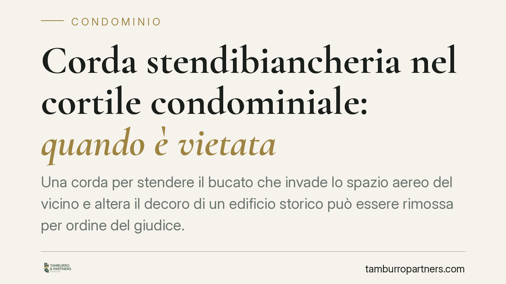

Corda stendibiancheria nel cortile condominiale: quando è vietata
Una corda per stendere il bucato che invade lo spazio aereo del vicino e altera il decoro di un edificio storico può essere rimossa per ordine del giudice. Una pronuncia del Tribunale di Venezia ricostruisce i confini tra uso legittimo della cosa comune e invasione della proprietà esclusiva altrui. Un tema minimo nella forma, ma rivelatore dei limiti del pari uso in condominio.

Il caso
Una condòmina installa una corda stendibiancheria nel cortile condominiale. Il filo, però, sconfina nello spazio aereo sovrastante una proprietà esclusiva altrui e altera l'aspetto di un edificio di valore storico. Secondo la ricostruzione, l'installazione sarebbe stata funzionale a ostacolare l'attuazione di una precedente delibera assembleare.
Il Tribunale di Venezia ha ordinato la rimozione. La pronuncia risulta essere una decisione di merito i cui estremi (sezione e numero) non sono al momento disponibili: il dato va quindi trattato come orientamento da verificare, non come precedente consolidato. Restano invece pienamente utili i principi giuridici richiamati.
Inquadramento normativo
Il primo riferimento è l'art. 840 cod. civ., che estende la proprietà del suolo allo spazio sovrastante (la cosiddetta "colonna d'aria"). Il proprietario non può opporsi ad attività altrui che si svolgano a un'altezza tale da non recargli alcun interesse a escluderle; ma può reagire quando un manufatto invade concretamente lo spazio aereo di sua pertinenza. Una corda tesa sopra un'area di proprietà esclusiva rientra in questa seconda ipotesi.
Il secondo riferimento è l'art. 1102 cod. civ., che disciplina l'uso della cosa comune. Ciascun condòmino può servirsene, purché non ne alteri la destinazione e non impedisca agli altri di farne pari uso. Due limiti concreti: non si può modificare la funzione dello spazio (nel caso, un cortile con valenza anche estetica) né compromettere il decoro architettonico dell'edificio. Sotto questo profilo il valore storico dell'immobile pesa nel giudizio.
Quando poi l'installazione incide sul possesso altrui, entra in gioco l'art. 1170 cod. civ., che tutela il possesso contro la turbativa. La norma distingue due situazioni: lo spoglio, cioè la privazione totale o parziale del possesso, e la turbativa (o molestia), cioè un atto che ostacola l'esercizio del possesso senza sottrarlo del tutto. Per l'azione di manutenzione basta l'animus turbandi, ossia la volontà di compiere l'atto che disturba: non è necessario un intento specifico di dispetto o un vero e proprio dolo. L'eventuale scopo di contrastare una delibera può aggravare la valutazione dei fatti, ma non è l'elemento che di per sé fonda la tutela possessoria.
Implicazioni pratiche
Per il condòmino il messaggio è chiaro: l'uso di uno spazio comune non è illimitato. Anche un intervento apparentemente banale, come tendere un filo, può diventare illegittimo se invade la proprietà di un altro, se snatura la funzione del bene comune o se deturpa l'estetica dell'edificio.
Per chi subisce l'invasione, gli strumenti sono differenziati. Contro l'ingerenza nello spazio aereo di proprietà esclusiva si può agire a tutela della proprietà (art. 840 c.c.). Contro la turbativa del possesso si può ricorrere all'azione di manutenzione (art. 1170 c.c.), sempre entro i termini di decadenza e alle condizioni di legge. La scelta tra i rimedi dipende dalla situazione concreta e dalla posizione giuridica di chi agisce.
Un dato spesso trascurato: il decoro architettonico non è un'esigenza puramente estetica, ma un valore tutelato che concorre a definire i limiti dell'uso legittimo. Negli edifici di pregio la soglia di tolleranza è più bassa.
Cosa fare in concreto
- Verifica il regolamento condominiale: controlla se disciplina l'uso del cortile, lo stendaggio del bucato e la tutela del decoro.
- Individua i confini reali degli spazi: accerta se il manufatto insiste su parti comuni o invade lo spazio aereo di una proprietà esclusiva.
- Documenta la situazione: fotografie datate, verbali assembleari e comunicazioni scritte sono utili in caso di contestazione.
- Solleva la questione in assemblea prima del contenzioso: una regola chiara e preventiva in regolamento riduce il rischio di lite.
- Valuta il rimedio corretto: azione a tutela della proprietà o azione possessoria hanno presupposti e termini diversi; una qualificazione errata può pregiudicare la difesa.
Un principio, non un divieto assoluto
La vicenda non dice che stendere il bucato in cortile sia vietato. Dice che l'uso della cosa comune trova un limite dove comincia il diritto altrui: la proprietà del vicino, il pari uso degli altri condòmini, il decoro dell'edificio. È in quel confine che si misura la legittimità del gesto quotidiano.
Ogni condominio ha una storia a sé.
Se gestisci un'amministrazione e vuoi un confronto su una specifica questione condominiale, scrivi allo studio. Ti rispondiamo entro un giorno lavorativo.